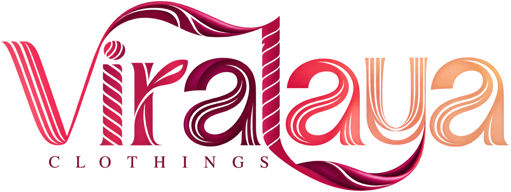

Fabric first
We begin with a material’s feel, weight, and drape so it supports the way you wear it.

Clothing, considered
Viralaya makes considered clothing from fabrics that feel good to wear, with purposeful details that earn a place in your everyday wardrobe.
Seasonal Celebration
Explore CollectionWhat guides our work
We begin with a material’s feel, weight, and drape so it supports the way you wear it.
Each silhouette is considered around real days, natural movement, and the layers you reach for most.
Finishing touches are treated as part of the garment, never an afterthought.
Every piece is looked over for the small details that help it feel right from the first wear.
The Viralaya way
We start with fabric character—its texture, weight, and drape—so every choice serves the garment.
Thoughtful construction brings ease to the everyday pieces you depend on most.
We give the smallest details the same attention as the silhouette they complete.
Why Viralaya
Viralaya believes in clothing that earns its place: thoughtful enough to feel special, easy enough to wear often, and made to stay with you through the life you live.